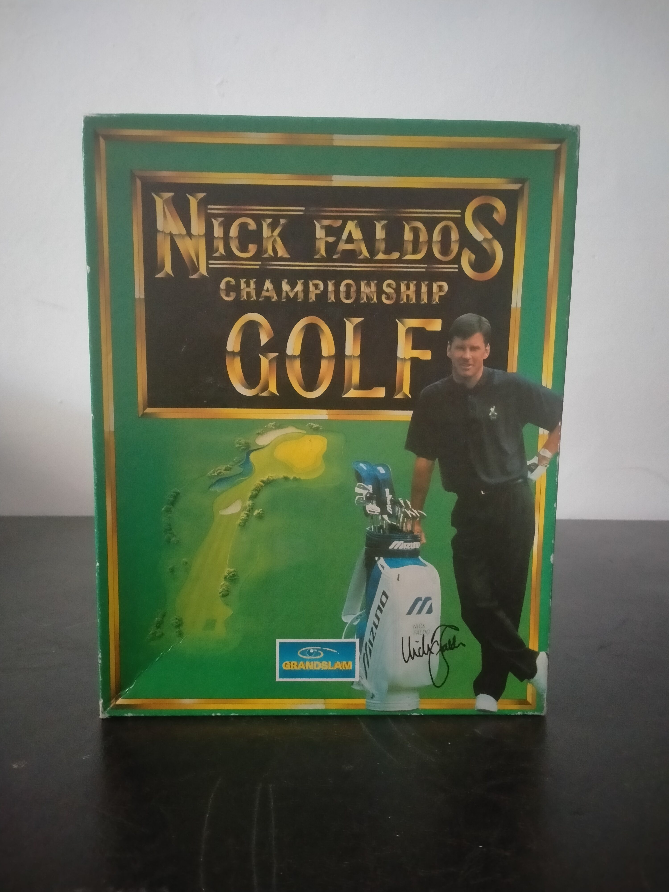

Ficha #000000
Nick Faldo's Championship Golf
Nick Faldo's Championship Golf es un simulador deportivo desarrollado por Arc Developments y publicado por Grandslam Video durante los primeros años de la década de 1990. ([MobyGames][1]) Esta edición europea para MS-DOS utiliza gráficos VGA de 256 colores y un sistema de representación poligonal orientado a recrear el relieve, las calles, los obstáculos y las condiciones del campo con un nivel de detalle notable para su época. Ofrece dos recorridos completos de 18 hoyos, tres niveles de dificultad —principiante, aficionado y profesional—, efectos de sonido digitalizados y una sección de entrenamiento asociada a Nick Faldo, con indicaciones sobre putt, draw, fade, juego desde búnker y comportamiento de la bola con viento. Su presentación en disquetes y caja grande documenta la etapa en la que los simuladores de golf para compatibles PC buscaban combinar precisión técnica, licencia de deportistas profesionales y una experiencia de juego cercana a la práctica real.
- Formato
- Big Box
- Plataforma
- MsDos
- Género
- Simulación deportiva Simulador de golf Golf
- Serie
- Todos Big Box
- Desarrollador
- Arc Developments Limited
- Distribuidor
- Grandslam Video Ltd.
- EAN
- —
Contenido de la edición
- Caja de cartón Big Box
- Manual Gameplay Instructions
- 2 disquetes de 3,5 pulgadas
Preservación
- Protección
- No determinado
- Formato recomendado
- Otro
- Jugable en virtualización
- Sí
Edición distribuida en dos disquetes de 3,5 pulgadas. Se recomienda crear una imagen sectorial individual de cada soporte, registrar etiquetas y orden de instalación, verificar la integridad de los volcados y conservar una copia del manual junto con las imágenes. La ejecución virtual es viable en un entorno MS-DOS emulado, aunque debe comprobarse si la edición concreta incorpora alguna validación documental o protección basada en el soporte original. ([myabandonware.com][2])